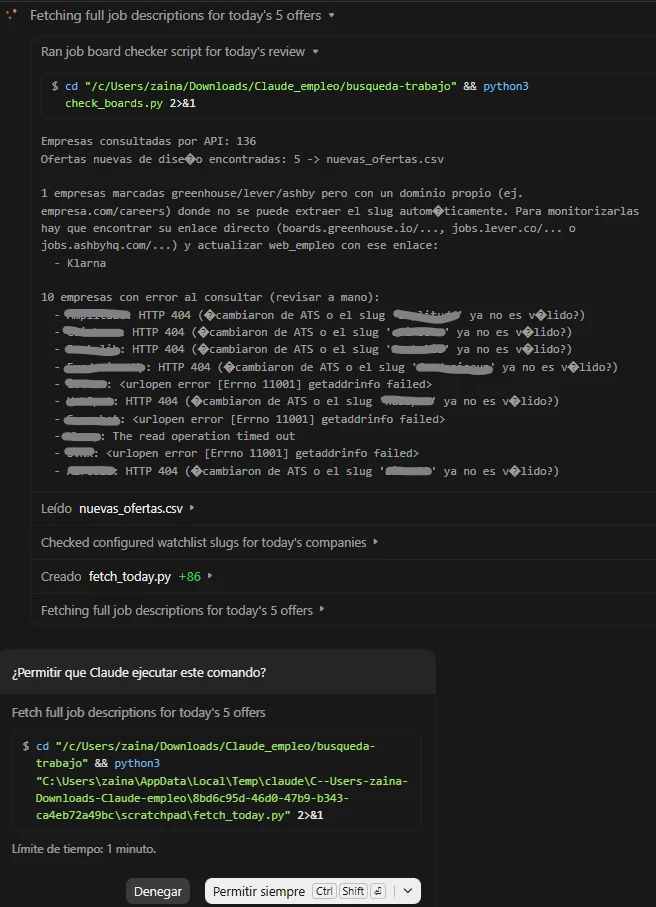
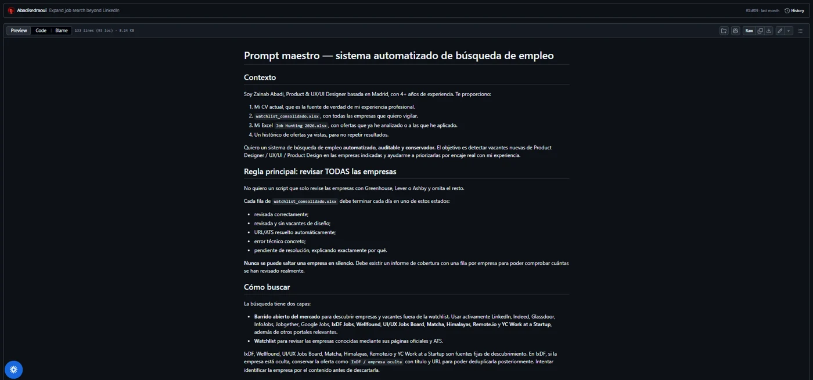
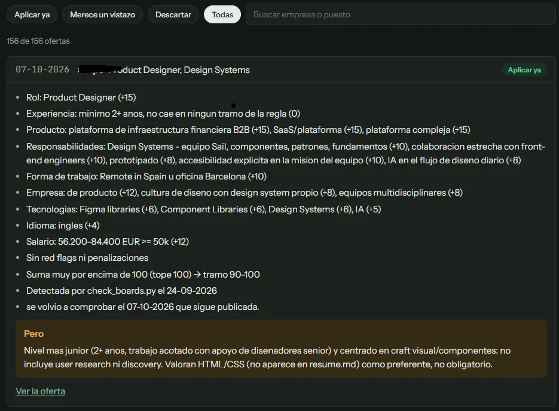
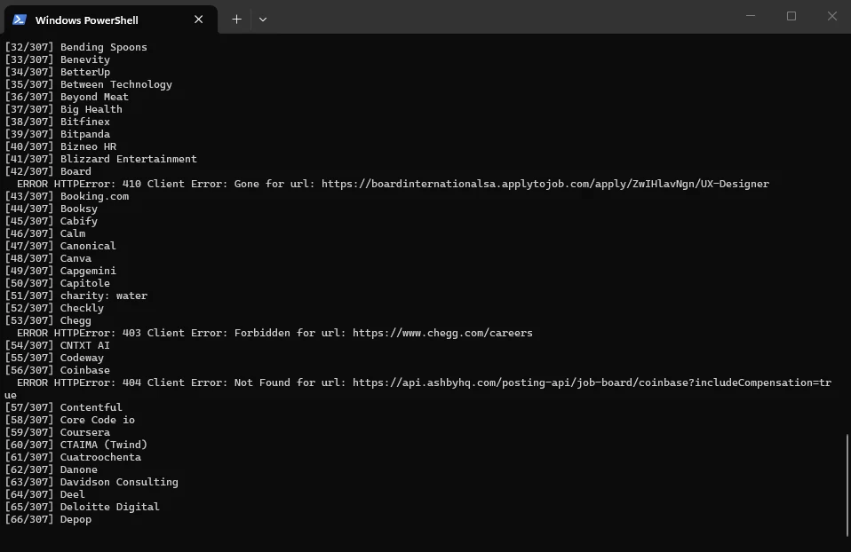
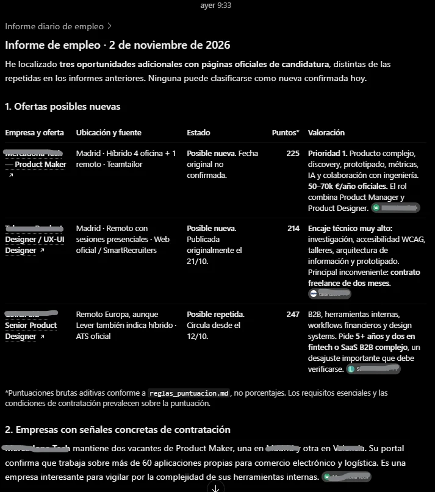
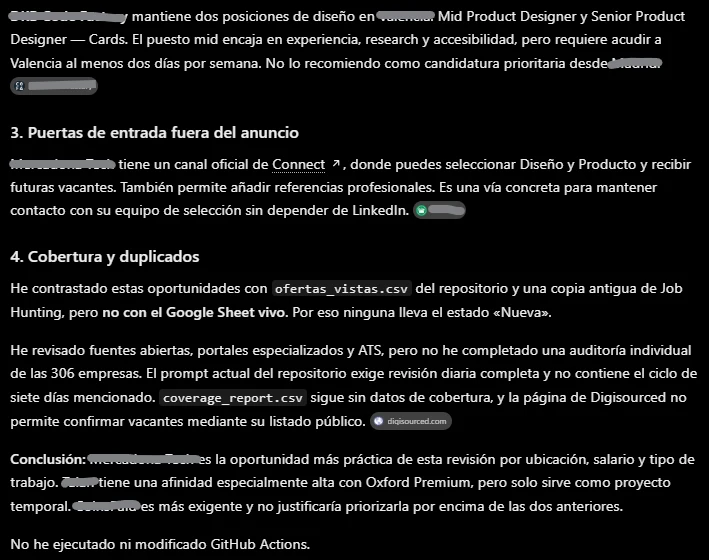
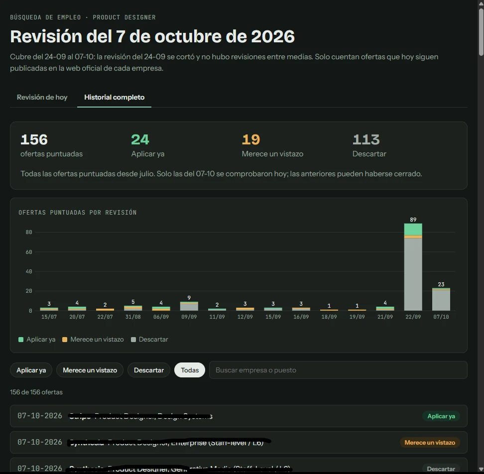

Experiment / AI + code / 2026 · Ongoing
Job Hunting.
Automating the search, not the decisions.
What happens when I treat my own job hunt as a product problem? Lots of testing, some broken automations, a growing Python project, and a clearer idea of what “automated” should mean.
Job search / v3
Less scrolling.
More checking.
Schematic graphic · not a live search result
A visual overview of the current experiment. This is an interface illustration, not a claim that all 306 companies were successfully checked in one run.
Quick scan
At a glance
Context & challenge
Repeated searches, duplicates, and no reliable way to know which companies had really been checked.
My role
Product thinking, requirements, Python, AI-assisted development, testing and iteration.
Approach & evidence
Tests with Claude and LinkedIn, then GitHub Actions, ATS APIs, Python and an audit.
Outcome & deliverables
A Python system with a 306-company watchlist, deduplication, CSV reports and a dashboard. Still in validation.
What changed
An audit found that the old checker silently skipped 170 companies. The new version records coverage and unresolved sources.
01 / Context
It started with an Excel spreadsheet
When I started looking for a job, I did what I always do with a lot of information: I made a spreadsheet. Companies, applications, salaries, notes, links. I wrote about that habit in Reflections of a chronic tracker that is job hunting (LinkedIn article, opens in a new tab).
The spreadsheet helped me keep track. But it did nothing for the work that comes before applying: visiting the same job boards, finding the same openings and checking the same companies.
I wanted to monitor the market without spending every morning on the same searches.
My goal was not to automate applying. I still want to read the offers and decide. I wanted to automate the repetitive searching, checking and organising around that decision.
I wanted to learn by building it myself: trying things, seeing what failed and fixing it as I went.
02 / First experiment
Claude: promising, but I was still supervising everything
The idea for an automatic search came from a LinkedIn post I saw, by someone whose name I no longer remember. I used it as inspiration and a starting point, especially its idea of a scoring system.
I did not go looking for ready-made systems after that. I wanted to learn by building my own.
I began by asking Claude to run a daily search. I gave it my CV, my preferred roles and my company list.
It found interesting opportunities, but the workflow was fragile:
- I kept hitting token limits.
- I had to approve permission requests.
- Sessions were interrupted.
- Sometimes I got a result without knowing which sources had been checked.
That last point bothered me most. I was supposed to be saving time, not supervising a search assistant every morning.
It was my first useful failure: a digest is not the same as a completed search. I needed evidence that the work had happened, not just a confident summary.
“Step 0: check if today's digest already ran.”
“Last commit is ‘digest 07-10-2026’ … Proceeding with the full daily review.”
“Running check_boards.py.”

03 / Search iteration
LinkedIn was not enough either
Next I tried LinkedIn searches and alerts. I tested keywords, job titles and location filters. I kept adjusting them for three reasons:
- Companies use different names for similar design roles.
- The same vacancies kept appearing.
- Relying on one platform limited my search.
I stopped trying to guess the perfect search. Instead, I compared the results with what I actually needed.
That led to a new question: could I check company career pages and ATS feeds directly? LinkedIn would become one place to discover roles, not the only one.
04 / GitHub-only phase
I moved the workflow to GitHub, then ran out of minutes
I wanted the search to run without a live conversation with Claude. So I moved the process into a GitHub repository.
It held scripts, a company watchlist, CSV histories, written rules and a scheduled workflow in GitHub Actions.
This gave the process a clearer structure. Instructions and source files lived together. Output could be committed. I could see what changed between runs.
Then I ran out of GitHub Actions minutes.
I paused the scheduled search to avoid extra charges. It was annoying, but it taught me what repeated runs, browser-based scraping and long workflows really cost.
A task that runs every day is not automatically a sustainable automation.
# PAUSED: GitHub-hosted Actions quota reached
# for this billing cycle.
on:
workflow_dispatch:
jobs:
paused_notice:
runs-on: ubuntu-latest
timeout-minutes: 205 / Requirements
I defined what “working” means
I did not begin by choosing the ideal stack or modelling the whole system. I learned as I tested. The requirements got sharper each time something failed.
I wrote down what the system should do:
- Monitor my company list.
- Search beyond LinkedIn.
- Find different UX/UI and Product Design job titles.
- Avoid showing the same offer twice.
- Compare each role with my experience.
- Keep a record of what has already been checked.
- Produce a report I can review quickly.
The most important addition was a coverage report with one outcome per company. If a page is blocked or unreadable, that must be visible. It must not quietly become “no jobs found”.
I also wrote scoring rules to prioritise offers. The idea of scoring came from that LinkedIn post I mentioned earlier. A high score means the role matches my profile. It does not predict whether a company will hire me.
A rule I kept coming back to
Never skip a company silently.
Possible outcomes: Checked / No relevant roles / Unresolved / Error

06 / Python + ChatGPT
I built a version I can inspect and run
Then I worked with ChatGPT to build a more independent Python version.
AI helped me move faster. It helped me write code, troubleshoot and compare approaches. I defined the requirements, worked through the logic, reviewed the scripts and tested whether the output solved the real problem.
I already work with code and understand programming logic. This project is a way to deepen that practice, alongside my master's in Research Methodology, where I am also studying Python. I learned from each implementation and from its limits. I did not pretend to choose every technical detail correctly from day one.
The system now does the following:
- Reads public job data from ATS platforms such as Greenhouse, Lever and Ashby.
- Parses HTML, and uses Playwright as a fallback for dynamic pages.
- Records historical results.
- Normalises URLs and checks for duplicates.
- Generates CSV and HTML reports.

07 / The audit
The audit found 170 companies being skipped
One of the most useful checks was also one of the most frustrating.
The old check_boards.py recognised only certain ATS types. My watchlist had 306 companies. The script skipped 170 of them before making any request.
So a list of results was not proof that the whole watchlist had been searched. I had to separate companies loaded from companies actually checked.
The newer check_all_companies.py records the outcome for each company. It also shows unresolved pages and technical errors. That is a stronger foundation, although it still needs more testing.
136 eligible for the old checker Not necessarily checked successfully
170 silently skipped Before any request


coverage_report.csv had no coverage data.08 / Visible state
I made the result easy to read
I wanted the output to make sense without opening a terminal or going through every CSV.
The dashboard brings together four things: checked companies, new offers, errors and unresolved sources.
As a test, I ran the checker locally on Notion, using Ashby's public endpoint. It generated the dashboard below.
That was one company, not the full watchlist. Full coverage of one test case is not full coverage of the project.
As a UX designer, this is the part I care about most. An automated system is not trustworthy just because it gives an answer. An interface should show what was checked, and also what it could not do.

09 / Another use case
I tried the same idea for art opportunities
My background is not limited to digital product design. I also have training and interests in art and interior design. So I built a parallel workflow for creative opportunities.
It uses a similar structure but different filters. A Product Designer role and an open call for artists should not be judged in the same way.
Keeping the histories and rules separate showed me which parts of the system can be reused and which cannot.
10 / Technical notes
What is in the repository
The codebase mixes Python scripts, plain-text specifications and machine-readable outputs. This lets me see both the decisions and the result of each run.
watchlist_consolidado.xlsxCompany inputcheck_all_companies.pyATS detection and checkingmake_shard.py / merge_shards.pySplit and combine batchesofertas_vistas.csvDeduplication historycoverage_report.csvOne row per company checked or attemptedresolution_cache.jsonResolved careers URLs and ATSdashboard.html / daily_search_report.mdHuman-readable outputsWhat works
- Checks company career pages and ATS feeds
- Removes duplicate offers
- Creates CSV reports and a dashboard
Still needs validation
- The scheduled workflow, paused because of the GitHub Actions quota
- Broad source discovery
- Complete end-to-end coverage
- Deduplication against every tracker
- Scoring
Running a Python script is not the same as having a reliable daily service. I keep these gaps visible instead of claiming this runs perfectly.
11 / Still building
What I learned from iterating
I built this project with AI. Getting code generated was not the hard part.
The hard part was learning which questions to ask, noticing when a result does not make sense, and adjusting the system until I could trust its output.
I am still improving coverage, execution costs and the way results are presented. I did not start with a perfect model of the solution. Each version showed me what the next one needs.
And yes, I still have my Excel.